Introduction
The Leads module helps sales teams capture, track and convert potential customers into opportunities. It centralises lead data, monitors how each lead progresses through the sales stages, and supports timely follow-ups so that no prospect is lost between contact and conversion.
Key Features and Functionalities
1. Leads Overview
Purpose: view and manage every lead recorded in the system from one list.
- Go to Sales → Leads. The page opens on the Kanban view. List, the tabular view, is on the view toolbar.
- In List view, use the search box and filters to narrow the leads by criteria such as lead name or lead source.
- Columns are sortable, and the filters applied to the list can be customised.
- Select leads with the row checkboxes to run bulk actions: Update, Export and Bulk Delete.
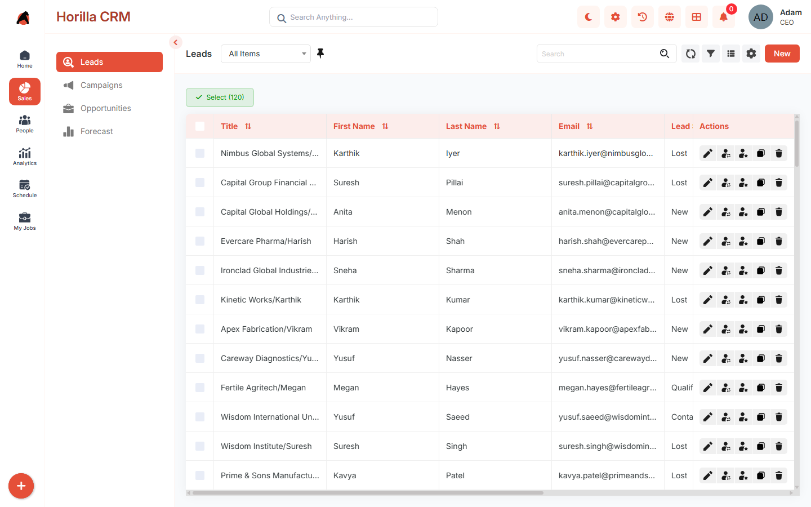
2. Kanban View
Purpose: follow lead progress visually across the sales stages.
- Each column represents a stage of the sales pipeline. Which stages appear, and how leads are categorised into them, is controlled by the Kanban settings.
- Drag and drop a lead card from one column to another to move the lead to a different stage.
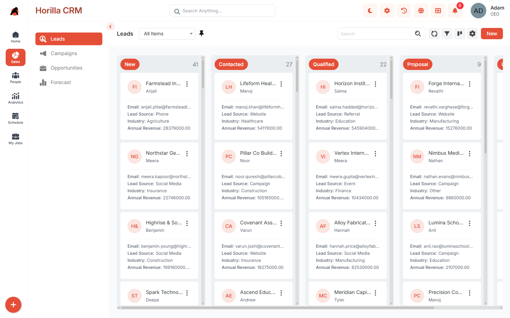
3. Card View
Purpose: scan leads as compact summary cards.
- Switch to Card View from the view toolbar.
- Each card shows the key lead details: Name, Lead Source, Stage and Lead Owner.
- The same search and filter options available in List View apply here.
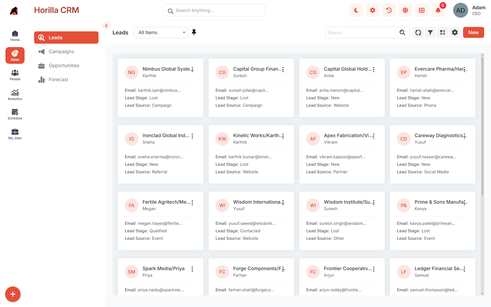
4. Group By View
Purpose: organise leads into collapsible groups for comparison.
- Switch to Group By View from the view toolbar.
- Group leads by Lead Stage, Lead Source, Lead Owner or Industry.
- Each group can be expanded or collapsed, making it easier to compare sets of leads.
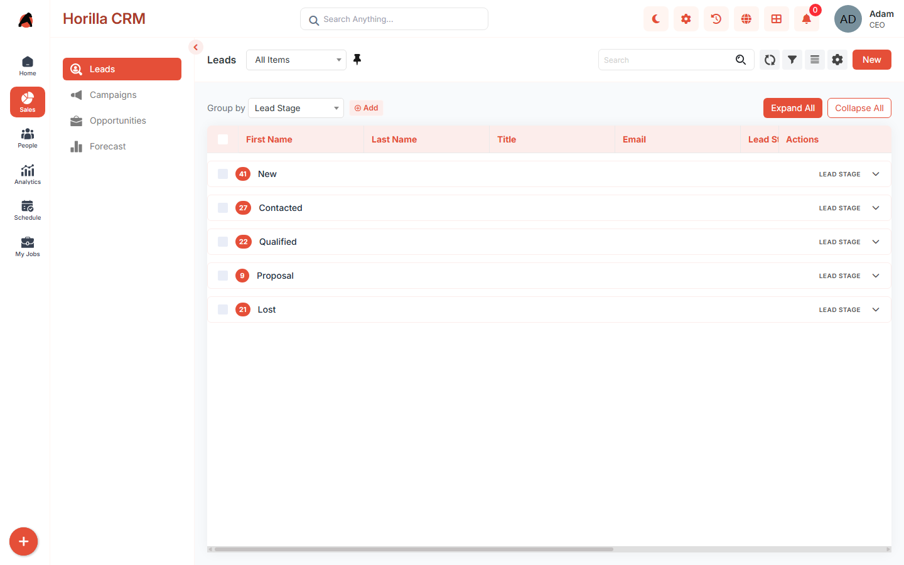
5. Chart View
Purpose: analyse lead data graphically.
- Switch to Chart View from the view toolbar.
- Charts summarise leads by stage, by source and by ownership.
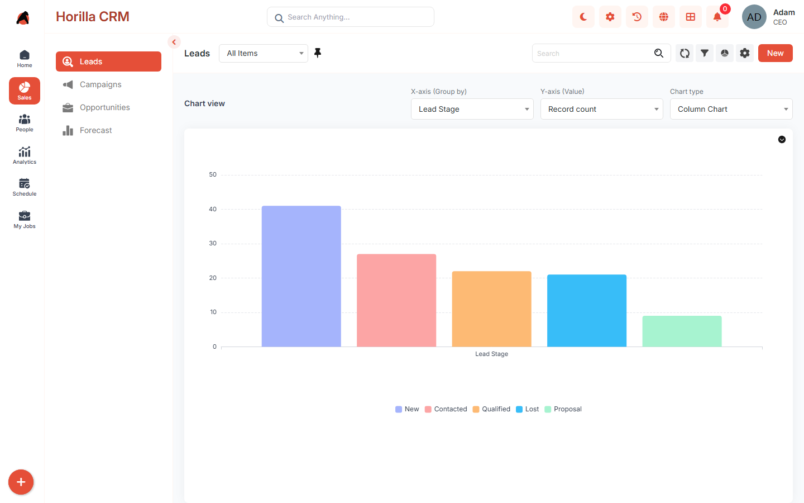
6. Split View
Purpose: read lead details without leaving the list.
- Activate Split View from the view toolbar.
- The left panel holds the lead list; the right panel shows the details of the selected lead.
- Clicking a lead in the left panel loads its details on the right, so you stay on the same page.
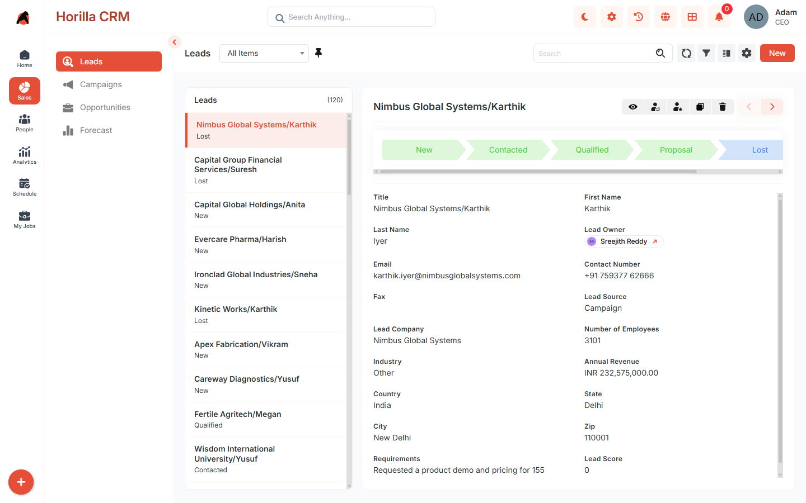
7. Timeline View
Purpose: see leads in chronological order.
- Switch to Timeline View from the view toolbar.
- Leads are ordered by creation date or by activity date.
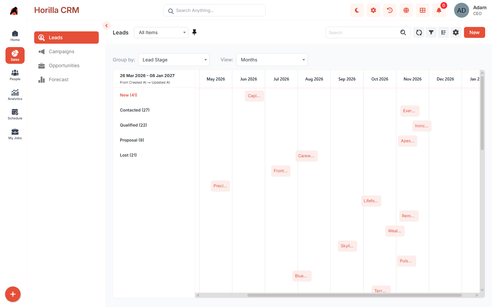
8. Creating a New Lead
Purpose: capture and store the information of a new lead.
Click New on the Leads page to open the lead creation form. Title is required. The other lead fields can be left blank. The form offers two entry modes, and you can switch between them at any time while filling it in.
Multi-Step Form
- Step 1 – Basic Information: Lead Owner, Name, Email, Lead Source, Industry.
- Step 2 – Company Details: Title, Contact Number, Lead Currency.
- Step 3 – Location.
- Step 4 – Requirements.
- Use Next and Previous to move between the steps, then click Save to create the lead.
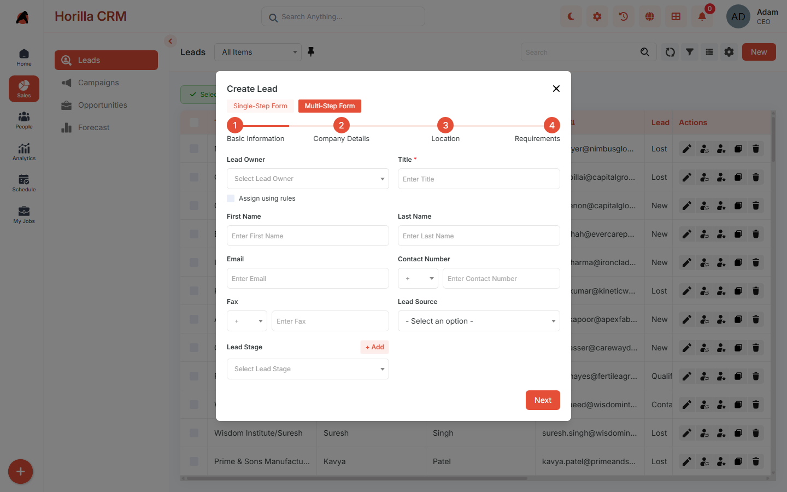
Single-Step Form
- All lead fields are presented on one page for quick data entry.
- Use the toggle in the form header to switch to single-step mode.
- Click Save to create the lead.
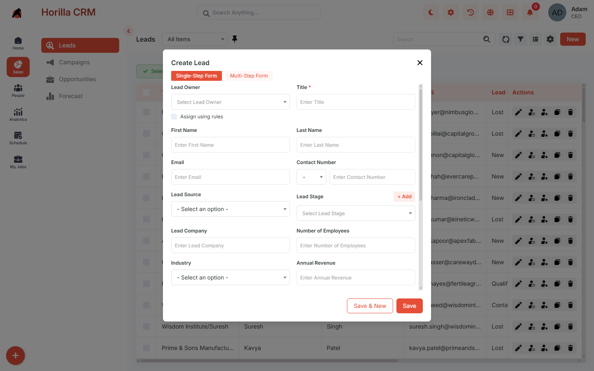
9. Lead Detailed Information
Purpose: work with everything recorded against a single lead.
- Open the detail view by clicking a lead from any of the views above.
- The detail view brings together related lists, Activities, Notes and Attachments and History. Notes and files are a stream: write in the box at the top, edit a note in place, and pin an entry. All, Notes and Files filter the stream.
- Lead conversion can be started directly from the progress bar on this page.
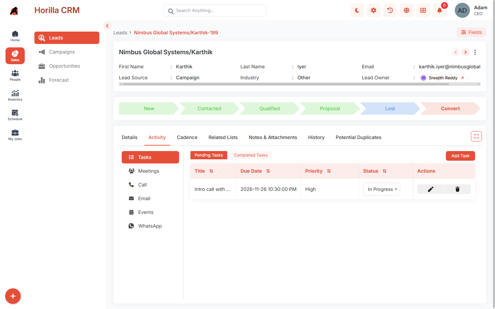
10. Lead Conversion Process
Purpose: turn a qualified lead into an Account, a Contact and an Opportunity.
Starting the conversion
- From the Detail View: open the lead, then click the final stage in the progress bar.
- From the Actions menu: in List, Card, Kanban or Group By view, click Actions on the lead and choose Convert.
Conversion form
- Choose which records to create: Account, Contact, Opportunity.
- Provide the required details: Account Name, Contact First Name and Last Name, and Opportunity Name.
- Click Convert to complete the process.
- A window titled Your lead has been converted shows the new account, contact and opportunity. Conversion does not start an approval.
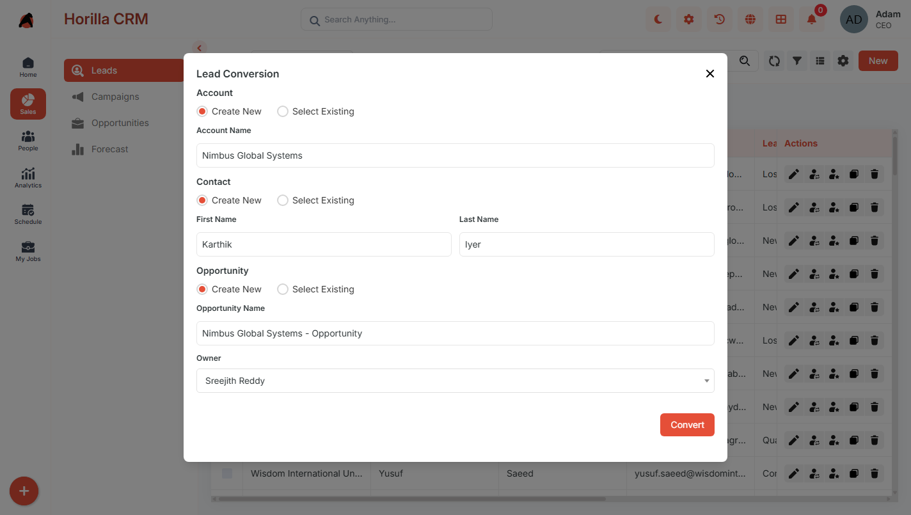
11. Current behaviour
- Edit Details on the lead checks the form the same way a normal save does. A rejected value is shown under that field, and the record is not saved. The separate Edit action is not shown when Edit Details can edit the record.
- List views include Oldest First. Group By supports the same bulk actions as the list, and Expand All opens the groups in view, then continues as you scroll.
- Long titles are shortened in the header, the breadcrumb and list cells. Field help is an info icon.
- Yes/no fields in inline edit are a two-segment control. File fields stay on the form.
- A Product Tour covers the Leads list and the lead detail. A step is skipped when its target is missing, and a table step is skipped on an empty list.
- An assignment rule leaves out a user who is unavailable. The lead is offered to someone still available in that rule.
- Create forms can be trimmed by a form layout, and extra fields come from custom fields and field requirements for this company.